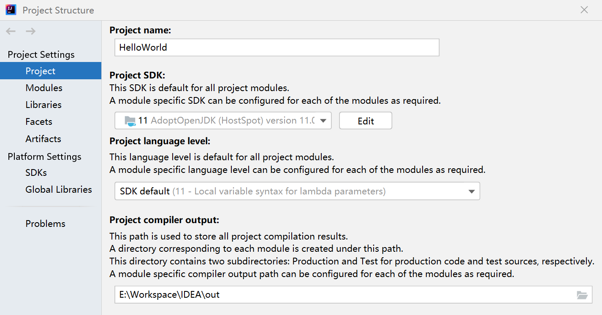

Java开发环境
Java Development Kit
choco install jdk8 # Windows: choco install jdk11, ojdkbuild11...
sudo apt install openjdk-8-jdk # => yum install java-1.8.0-openjdk
apt：openjdk-11-jdk安装JDK；openjdk-11-jre仅安装JRE。
yum：java-11-openjdk-devel安装JDK；java-11-openjdk：仅安装JRE。
迁移到 Java 11 的原因 - Azure | Microsoft Docs
从 Java 8 转换到 Java 11 - Azure | Microsoft Docs（ClassLoader 注意事项）。
Optimized to run Java™ applications cost-effectively in the cloud, Eclipse OpenJ9 is a fast and efficient JVM that delivers power and performance when you need it most.
环境变量
通过软件包管理器安装的开发环境通常已经设置环境变量，如果是直接下载的软件包则需要手动设置。基于Java的软件依赖Java相关的环境变量来定位Java的可执行文件和库文件。其中：
PATH：可执行文件（Java编译器、解释器），位于JDK安装目录下的bin目录；JAVA_HOME：Java安装目录；CLASSPATH：外部库搜索路径，JVM通过CLASSPATH来寻找类。LD_LIBRARY_PATH：shared native libraries like.DLLor.sonotJARSor classes.
在Linux中，通过系统安装的JDK会将可执行文件的符号链接（例如/etc/alternatives/java$\rightarrow$
/usr/lib/jvm/java-6-openjdk-i386/jre/bin/java）放在/usr/bin目录下，所以在终端中可以直接运行，而无需修改PATH变量。如果是手动安装的JDK，则不会有这些符号链接。要设置上述变量，则编辑~/.bashrc文件，添加以下内容：
export PATH=$PATH:java_home/bin # echo $PATH
export JAVA_HOME=/usr/lib/jvm/java-7-openjdk-amd64 # echo $JAVA_HOME
export CLASSPATH=.:java_home/lib/dt.jar:java_home/lib/tools.jar
全局设置：在/etc/profile.d/java.sh 中添加
export JAVA_HOME=/path/to/java_installation
或/etc/environment中添加
JAVA_HOME=/path/to/java_installation
在Windows中则通过系统中的环境变量编辑窗口设置（如果是安装版软件，通常会设置上述变量）。
确定JAVA_HOME
update-alternatives --display java
返回值为java可执行文件的路径，其父目录为xxxjdk/jre/bin。
JDK目前会在
jre的上层目录创建一个bin目录，其中部分可执行文件链接到jre/bin中的对应文件，但jdk/bin目录下包含更多可执行文件。因此两个位置都可以作为JAVA_HOME。
如果安装了JDK，可以使用jrunscript程序查找JAVA_HOME：
jrunscript -e 'java.lang.System.out.println(java.lang.System.getProperty("java.home"));'
JDK/JRE headless: 没有键盘、鼠标和显示系统支持，更适合服务器应用。
JavaFX
Java 11开始JavaFX从JDK拆分出来，独立发布。因此对于需要使用JavaFX的程序，需要在系统中单独进行安装。
Ubuntu 18.04 (LTS) 提供openjfx作为openjdk的JavaFX版本。在软件仓库中可以选择安装openjdk-8-jdk（JDK8）或openjdk-11-jdk（JDK11），但是默认提供最新版openjfx（JavaFX11），而JavaFX11与JDK8不兼容。因此如果使用JDK8，需要指定安装的JavaFX版本，并阻止其升级。
sudo apt install \
openjfx=8u161-b12-1ubuntu2 \
libopenjfx-java=8u161-b12-1ubuntu2 \
libopenjfx-jni=8u161-b12-1ubuntu2
# list all available openjfx version in the repository
# sudo apt show openjfx -a
sudo apt-mark hold openjfx libopenjfx-java libopenjfx-jni
Java编译器
将java源文件编译为字节码文件。
javac -d <dir> \
--{class-path,classpath,cp} <path> \ # 依赖库搜索目录
--{boot-class-path,bootclasspath} <path> \ # 启动类的路径
-encoding <encoding> \ # 指定源文件使用的字符编码
-sourcepath <project_path> \ # 代码查找路径 => 项目根目录
src/main/java/.../src.java
源代码默认位于项目根目录下的src/main/java目录（Maven约定），往下为包结构对应的目录。
-d：指定编译输出的目录（默认为源代码所在目录），在该目录下，输出字节码的存储路径与源代码中声明的包名对应（不包含src/main/java）。
依赖库搜索路径用于寻找源代码中导入的外部类*.class，可以为目录、jar文件和zip文件；path/*将包含该目录下的所有jar文件。
反编译
使用javap可进行反编译代码（将字节码转换为可读格式），jd-gui是一个图形化反编译工具，可根据字节码还原源代码。
javap -c -verbose ... App.class
# -classpath 指定搜索路径
# -l 输出行号和本地变量表
# -public/protected/package/private: 要输出的成员访问级别，private输出所有成员
归档
查看档案文件内容
jar tvf jarfile.jar
工具链
Make
target:
javac ./package1/A.java -d ../classes
javac ./package1/B.java -d ../classes
javac ./package2/C.java -d ../classes
javac ./main/Test.java -d ../classes/main/ -classpath ../classes
run:
java -classpath ../classes/main;../classes Test
clean:
rm -rf ../classes/package1/*.class
rm -rf ../classes/package2/*.class
rm -rf ../classes/main/*.class
Maven
Apache Maven是软件项目管理和分析工具，基于项目对象模型（Project Object Model，POM），Maven可以管理项目的构建、报告和文档。
Maven程序仓库：查找插件、项目的相关信息（例如版本）。
安装和配置Maven
IDEA和Eclipse等IDE通常已集成Maven。独立安装方式：
choco install maven # Windows
sudo apt install maven # Linux
配置文件settings.xml：
- 全局：
${maven.home}/conf或/etc/maven/settings.xml； - 用户：
${user.home}/.m2/settings.xml（默认无此文件，可将全局文件复制过来修改）；
<settings xmlns="http://maven.apache.org/SETTINGS/1.0.0"
xmlns:xsi="http://www.w3.org/2001/XMLSchema-instance"
xsi:schemaLocation="http://maven.apache.org/SETTINGS/1.0.0
https://maven.apache.org/xsd/settings-1.0.0.xsd">
<mirrors>
<mirror>
<id>central-mirror</id>
<url>https://maven.aliyun.com/repository/central</url>
<mirrorOf>*</mirrorOf>
</mirror>
</mirrors>
</settings>
使用-s选项切换默认用户配置文件，使用-f选项切换默认项目文件：
mvn commands [...] -s settings.xml -f pom.xml
全局配置
<profiles>
<profile>
<id>nexus</id>
<activation><!--激活条件-->
<activeByDefault>false</activeByDefault>
<jdk>1.5</jdk> <!-- JDK版本 -->
<os>...</os> <!-- 操作系统版本 -->
<property></property> <!-- POM中定义的属性是否满足条件：$${name}=value -->
<file></file> <!-- 判断文件是否存在exists/missing -->
</activation>
<properties></properties> <!-- POM属性定义：覆盖全局定义 -->
<repositories>...</repositories>
<pluginRepositories>...</pluginRepositories>
</profile>
</profiles>
<activeProfiles> <!-- 无论activation是否有效 -->
<activeProfile>nexus</activeProfile>
</activeProfiles>
设置仓库
local and remote (public and internal)
Downloading in Maven is triggered by a project declaring a dependency that is not present in the local repository (or for a SNAPSHOT, when the remote repository contains one that is newer).
为提升下载速度，可使用距离较近的镜像仓库或本地仓库。修改settings.xml文件。依赖仓库的选择方式：依赖优先级关系
Maven执行构建时，由近(本地仓库)及远(远程仓库)获取依赖库，具体地：
-
首先查找本地仓库，默认位于
$HOME/$.m2/repository。本地仓库路径配置项位于settings.xml中。<settings> <localRepository>$PATH/.m2/repository</localRepository> </settings> -
其次，根据全局配置文件
settings.xml以及项目配置文件pom.xml中关于仓库的配置信息，从已配置仓库中依次尝试下载依赖库，直到下载成功或尝试完所有仓库后失败。
Maven[默认使用中央仓库](Maven POM.md#默认仓库)，如果上述配置文件中配置了任何仓库，将不再请求默认仓库。
Note: The official Maven repository is at https://repo.maven.apache.org/maven2 hosted by the Sonatype Company and is distributed worldwide via CDN.
阿里云公共仓库：线上可搜索包名、获取其Maven依赖配置语句以及直接下载包。将其仓库地址通过以下方式设置为项目使用的仓库地址。
仓库名称 仓库地址 central https://maven.aliyun.com/repository/central不包含spring库 spring https://maven.aliyun.com/repository/springpublic https://maven.aliyun.com/repository/publiccentral和jcenter的聚合
仓库的配置方式包括：
-
通过项目的
pom.xml中project.repositories/pluginRepositories声明一个或多个repository配置；<repositories> <repository> <id>central</id> <url>http://127.0.0.1:8081/repository/maven-central/</url> </repository> <reposirtory>...</reposirtory> </repositories> <pluginRepositories>...</pluginRepositories> -
可将上述声明置于项目的
project.profiles声明的一个profile中；<profiles> <profile> <id>nexus</id> <repositories>...</repositories> </profile> </profiles> -
也可将较为固定的仓库配置以
profile写在全局配置文件中，根据环境激活相应配置或手动激活；<profiles> <profile> <id>nexus</id> <activation>...</activation> <repositories>...</repositories> </profile> </profiles> <activeProfiles> <!-- 无论activation是否有效 --> <activeProfile>nexus</activeProfile> </activeProfiles>
设置仓库镜像
此外，Maven支持配置仓库镜像转发，用于将对上述配置仓库的下载请求转发到第三方或本地仓库或代理。通过settings.xml中的settings.mirrors.mirror配置基于仓库ID匹配的转发规则，可以为不同仓库指定不同的镜像源。匹配从上向下进行，如果未匹配到任何项，则尝试使用第一条规则，然后使用匹配到的规则的URL进行请求下载。
<mirrors>
<mirror>
<id>nexus-central</id> <!-- mirror-rule-id -->
<url>http://127.0.0.1:8081/repository/maven-central/</url> <!--forward URL-->
<mirrorOf>*,!dev</mirrorOf> <!-- 匹配要转发的仓库请求：默认响应central仓库请求 -->
</mirror>
<mirror>
<id>nexus-dev</id> <!-- mirror-rule-id: self-hosted repo -->
<url>http://127.0.0.1:8081/repository/maven-dev/</url>
<mirrorOf>dev</mirrorOf> <!-- 仅响应dev仓库的请求 -->
</mirror>
</mirrors>
匹配规则：
*：匹配所有仓库请求；*,!repo：除repo以外的所有仓库；
通过仓库管理器（如Nexus）可将不同仓库合并统一对外提供服务接口。仓库管理接收到请求后，将逐次尝试合并仓库中的每个仓库是否有请求的内容，并对外服务。通过这种方式可将上述mirrors或repositroies的配置简化为一项。
声明依赖包
在项目的pom.xml文件中添加依赖包声明。
<dependencies>
<dependency>
<groupId>org.apache.spark</groupId>
<artifactId>spark-sql_2.11</artifactId>
<version>2.4.5</version>
</dependency>
</dependencies>
声明项目使用的插件
应指定插件的groupId，artifactId和version。
发布声明
在项目pom.xml的project块下声明distributionManagement，用于声明输出包的发布服务器信息（包括releases和snapshot版本）。
<distributionManagement>
<repository> <!-- snapshotRepository -->
<id>nexus</id>
<url>http://127.0.0.1:8081/repository/maven-releases/</url>
</repository>
</distributionManagement>
Maven工作流
编译
mvn [clean] compile -s settings.xml -f pom.xml # 指定配置文件
mvn verify
编译过程会自动从Maven程序仓库下载依赖包，默认的本地存储路径为$HOME/.m2/repository。
编译时，在resources目录下的文件也将被复制到目标（target/classes）目录下，在打包时也一同输出至包。
源代码文本编码
在Windows下，Maven传递给编译器的默认编码方式为GBK，而代码通常为UTF-8编码，如果代码中存在中文字符，则会出现编码GBK的不可映射字符。解决方法：1)在项目pom.xml的project/properties块中设置project.build.sourceEncoding=UTF-8；2) 如果上述设置无效或需要使用项目特定的编码方式，则在项目/project/build/plugins下的资源插件配置项中设置encoding=UTF-8。3) 在编译插件maven-compiler-plugin配置中指定编码方式。
<plugin>
<artifactId>maven-resources-plugin</artifactId>
<configuration>
<encoding>UTF-8</encoding>
</configuration>
</plugin>
打包
mvn [clean] package
如果程序依赖其他软件包，则打包的文件需要声明依赖软件包的路径，或者将依赖软件包同时打包至输出文件。如果无法引用相应的依赖包，将造成NoClassDefFoundError等错误。
-
指定程序的入口和依赖包的位置，在运行java程序时，查找依赖包的根目录为java程序包所在目录，而非Java解释器的当前工作目录。
在Linux下使用
*.jar文件的符号链接，仍然会以符号链接的目标文件路径作为查找根目录；而在Windows下的符号链接则以符号链接所在目录为根目录。<plugin> <groupId>org.apache.maven.plugins</groupId> <artifactId>maven-jar-plugin</artifactId> <version>3.1.0</version> <configuration> <archive> <manifest> <addClasspath>true</addClasspath> <classpathPrefix>lib/</classpathPrefix> <mainClass>package.MainClass</mainClass> </manifest> </archive> </configuration> </plugin>如果项目的多个类包含
Main函数，则需使用具体的类名package.MainClass指定程序入口函数所在类 。将
${project.build.finalName}作为classpathPrefix的前缀，导致搜索不到某些类（例如picocli）。 -
将依赖软件包作为库输出。在执行打包时，利用
maven-dependency-plugin工具将依赖软件包输出至指定位置：<plugin> <groupId>org.apache.maven.plugins</groupId> <artifactId>maven-dependency-plugin</artifactId> <executions> <execution> <id>copy-dependencies</id> <phase>prepare-package</phase> <goals> <goal>copy-dependencies</goal> </goals> <configuration> <outputDirectory> ${project.build.directory}/lib </outputDirectory> </configuration> </execution> </executions> </plugin>依赖软件包应该与输出的包同时分发，避免无法引用。
-
将依赖包同时打包至输出软件包
在执行打包期间，利用
maven-shade-plugin将依赖包添加至目标包。<plugin> <groupId>org.apache.maven.plugins</groupId> <artifactId>maven-shade-plugin</artifactId> <version>3.2.1</version> <executions> <execution> <phase>package</phase> <goals> <goal>shade</goal> </goals> </execution> </executions> </plugin>此方法将造成目标包体积过大。类似地，
maven-assembly-plugin也可以完成此功能。<plugin> <artifactId>maven-assembly-plugin</artifactId> <version>3.2.0</version> <configuration> <archive> <manifest> <mainClass>fully.qualified.MainClass</mainClass> </manifest> </archive> <descriptorRefs> <descriptorRef>jar-with-dependencies</descriptorRef> </descriptorRefs> </configuration> <executions> <execution> <id>make-assembly</id> <phase>package</phase> <goals> <goal>signle</goal> </goals> </execution> </executions> </plugin>完成打包后，还需执行
mvn assembly:assembly将依赖包添加进目标包。mvn clean package assembly:singleIf your project wants to package your artifact in an uber-jar, the assembly plugin provides only basic support. For more control, use the Maven Shade Plugin.
Gradle vs. Maven: Performance, Compatibility, Builds, & More – Stackify
Maven常见问题
- 下载依赖包的过程中出现
Checksum failed on download:...的错误。有可能是因为下载过程为多线程，依赖包先于其校验文件被下载到本地无法完成校验。这种情况可尝试重新执行编译命令看是否依赖包已下载完成，或设置-Dmaven.artifact.threads=1使用单线程下载依赖包。
集成开发环境
Visual Studio Code
安装Java Extension Pack，其中的扩展包括： Language Support for Java™ by Red Hat，Debugger for Java，Java Test Runner，Maven Project Explorer，Java Dependency Viewer，Visual Studio IntelliCode。
Java开发环境配置
配置系统中可用的Java运行环境及其版本信息（name的值为内置用于识别Java版本，可进行选择）。
"java.configuration.runtimes": [
{
"name": "JavaSE-11",
"path": "C:/Program Files/AdoptOpenJDK/jdk-11.0.11.9-hotspot",
"default": true
},{
"name": "JavaSE-1.8",
"path": "C:/tools/jdk8u275-b01"
}
]
调试环境配置
设置环境变量，以及程序的传入参数等。
"configurations": [
{
"args": "tfapi", # input arguments
"env":{ "LD_LIBRARY_PATH": "your/path" } # environment variables
}
]
基于Maven的Java项目
安装Maven，使用maven插件，快速创建项目maven-archtype-quickstart。
maven.compiler.source和maven.compiler.target如果与默认JDK版本不同，将产生警告，需要首先配置相应的JDK版本。
Eclipse
Maven支持：Eclipse内置Maven支持（m2e）。
IntelliJ IDEA
IDEA内置maven插件，支持直接创建基于maven的项目（自动生成pom.xml）。
项目配置
入口：菜单项File/Project Structure...（项目管理器没有配置入口）。
配置项目使用的JDK等信息。
加载依赖项
在pom.xml中添加依赖项定义（dependency）后，不会自动下载依赖项，需要重新加载Maven项目。
常见问题
-
依赖项冲突
出现
NoSuchMethodError或UndefinedClassError：引用的依赖库版本不正确，API不兼容导致找不到调用的类或方法。